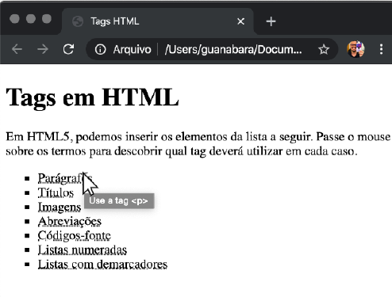

Desafio das Tags
Esse exercício faz uma lista de coisas que podem ser adicionadas em uma página. O desafio aqui é arrumar uma maneira que, ao passar o mouse sobre um termo, mostre qual é a tag utilizada para fazer isso. Olha aí um exemplo:
| Desafio das Tags | Minha Resolução |
|---|---|
|  |